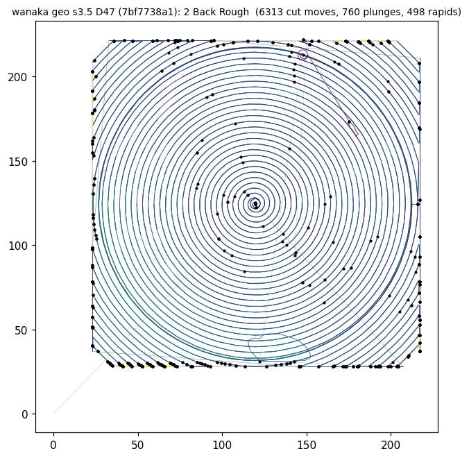
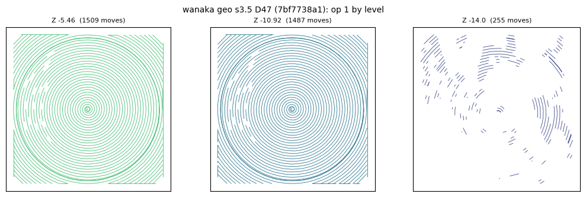
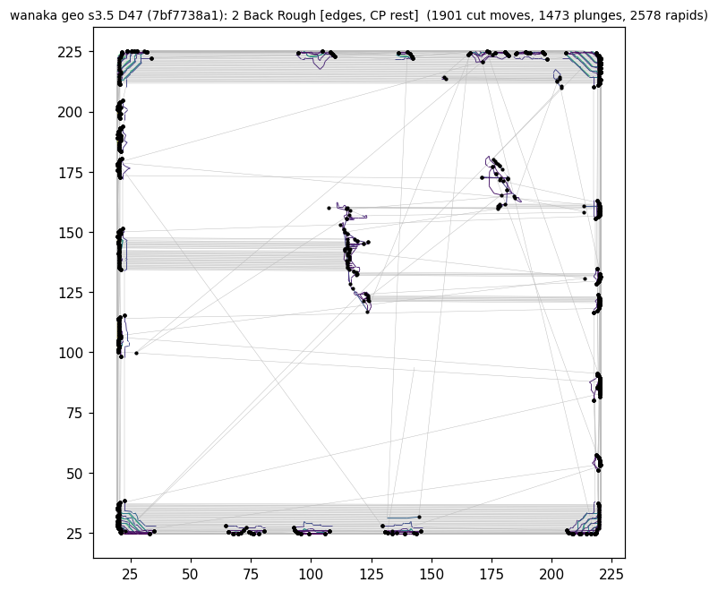
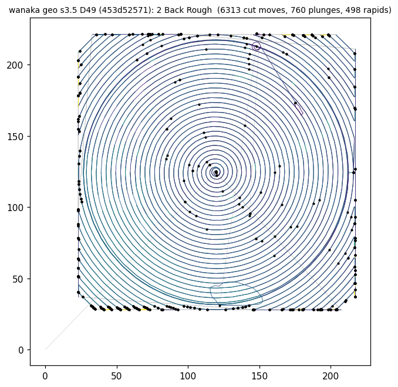
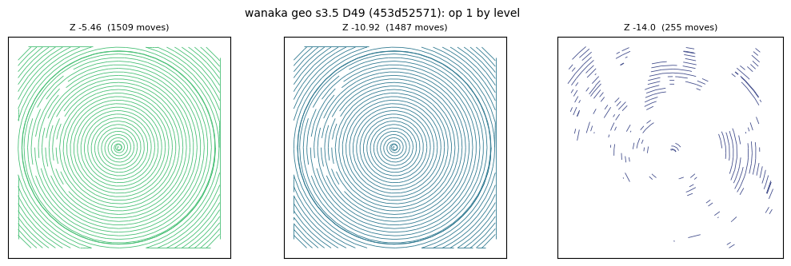
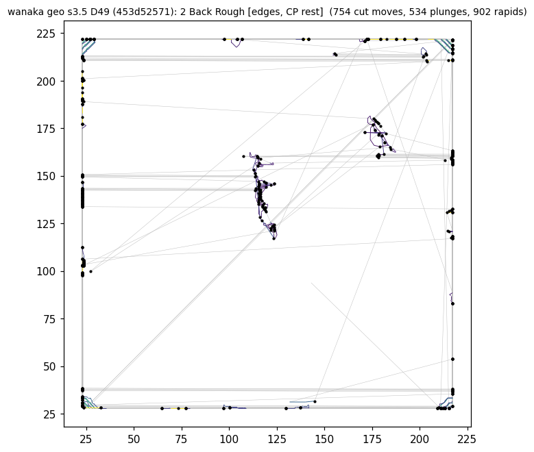

D49 toolpath renders ( from program.nc; colour = Z, black dot = plunge, grey = rapid)
wanaka geo s3.5 D47 (7bf7738a1): 2 Back Rough

wanaka geo s3.5 D47 (7bf7738a1): op 1 by level

wanaka geo s3.5 D47 (7bf7738a1): 2 Back Rough [edges, CP rest]

wanaka geo s3.5 D49 (453d52571): 2 Back Rough

wanaka geo s3.5 D49 (453d52571): op 1 by level

wanaka geo s3.5 D49 (453d52571): 2 Back Rough [edges, CP rest]
